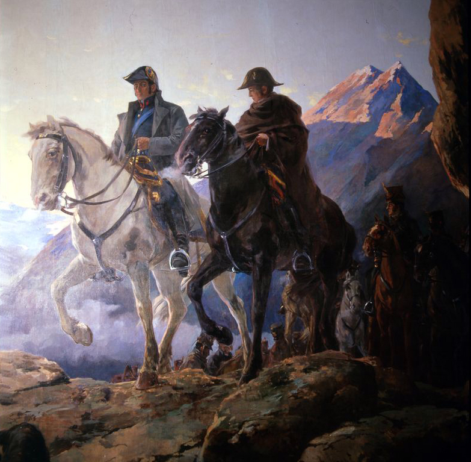
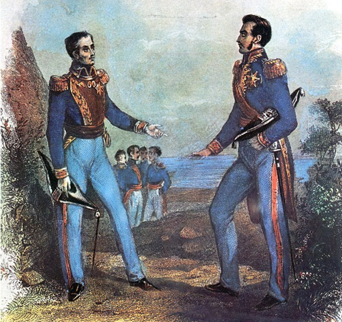
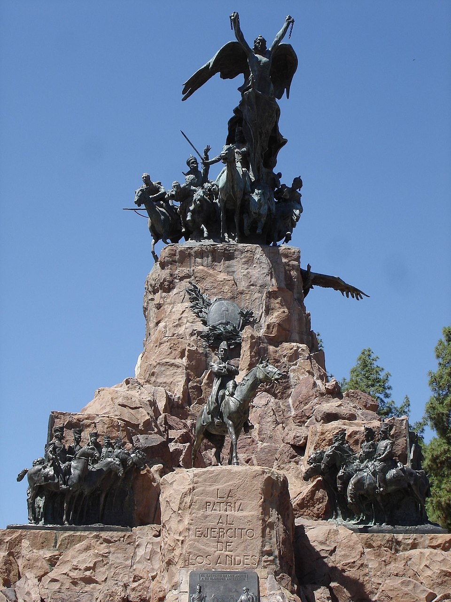

⏱️ 10초 카드 · 라틴아메리카 독립 (1778~1850)
남부의 해방자안데스 횡단페루 독립스스로 물러난 영웅
여는 질문 — '머무는 책임'과 '떠나는 미덕' 중 무엇이 더 어려울까?
이름
한국어산마르틴
원어José de San Martín
실제 발음호세 데 산마르틴
로마자José de San Martín
영어권José de San Martín
별칭남부의 해방자
왜 이 사람인가
볼리바르가 북에서 내려왔다면, 산마르틴은 남에서 올라갔어요. 둘이 만난 곳에서 그는 모든 권력을 내려놓고 사라졌죠. 안데스를 넘은 명장이자 권력 다툼 없이 퇴장한 드문 영웅 — 워싱턴·볼리바르와 나란히 '물러남'을 묻게 해요.
생애
지금의 아르헨티나에서 태어나 스페인에서 직업 군인으로 성장했어요 — 나폴레옹군과 싸운 베테랑이었죠. 고향의 독립 소식에 경력을 버리고 돌아와 독립군의 기둥이 됩니다.
그의 걸작은 1817년의 안데스 횡단이에요. '리마로 가는 길은 바다가 아니라 산맥'이라는 역발상으로, 5,000여 명의 군대를 해발 4,000m의 고개들로 넘겨 칠레의 왕당파를 기습했죠 — 한니발·나폴레옹의 알프스 횡단에 견줘지는 작전이에요. 이어 해군을 만들어 페루로 북상, 1821년 리마에서 독립을 선언했어요.
1822년 과야킬에서 볼리바르를 만난 뒤, 그는 모든 직위를 내려놓고 유럽으로 떠났어요 — '한 무대에 두 해방자는 필요 없다'는 판단이었다고 전해지죠(회담 내용은 비밀에 부쳐져 역사의 수수께끼로 남았어요). 권력 다툼 없이 물러난 드문 영웅으로, 아르헨티나의 '국부'로 기려져요.
자료로 보기 — 유묵·사진



남긴 말
“자유로워지자. 나머지는 아무것도 중요하지 않다.”
독립의 목표를 한 문장으로 압축한 그의 유명한 말이에요. · 출처: 산마르틴 (Seamos libres, lo demás no importa nada)
“그대는 마땅히 되어야 할 존재가 되라. 그러지 못하면 아무것도 아니다.”
규율과 자기완성을 중시한 그의 성품을 보여 주는, 널리 전해지는 격언이에요. · 출처: 산마르틴에게 전해지는 말
연표
- 1778출생 (현 아르헨티나)
- 1812귀향 — 독립군 합류
- 1817안데스 횡단 — 차카부코 승리, 칠레 해방
- 1821리마 입성 — 페루 독립 선언
- 1822과야킬 회담 후 모든 직위 사퇴
- 1850프랑스에서 사망
남에서 북으로 — 안데스를 넘은 해방의 길
고향에서 시작해 산맥을 넘고 바다를 거슬러 페루까지, 그리고 정점에서 스스로 무대를 떠난 길이에요.
현재 지도 위 표시예요. 멘도사에서 산티아고로 이어진 선이 바로 그 유명한 '안데스 횡단'이에요.
빛과 그림자안데스를 넘은 명장이자 권력에서 스스로 물러난 절제의 인물 — 다만 그 퇴장이 페루 정국의 공백과 혼란으로 이어졌다는 평가도 있어요. '머무는 책임'과 '떠나는 미덕' 사이의 줄타기를 생각하게 해요.
더 깊이 (고등·일반)
스페인 군인에서 독립군으로
지금의 아르헨티나에서 태어나 스페인에서 직업 군인으로 컸어요 — 나폴레옹군과 싸운 베테랑이었죠. 고향의 독립 소식에 그는 잘 닦은 경력을 버리고 돌아왔어요.
안데스 횡단(1817) — 역발상의 걸작
'리마로 가는 길은 바다가 아니라 산맥'이라는 역발상으로, 5,000여 명의 군대를 해발 4,000m의 고개들로 넘겼어요. 한니발·나폴레옹의 알프스 횡단에 견줘지는 작전이죠.
칠레 해방
기습에 성공해 차카부코·마이푸에서 왕당파를 꺾고 칠레를 해방시켰어요. 산을 넘어온 군대가 전세를 단번에 뒤집은 거예요.
페루로, 그리고 독립선언(1821)
이어 해군까지 만들어 페루로 북상했어요. 1821년 리마에서 독립을 선언하고 '보호자'가 됐지만, 그는 권력보다 독립의 완성을 원했죠.
과야킬 회담과 퇴장(1822)
북에서 올라온 볼리바르와 과야킬에서 만난 뒤, 그는 모든 직위를 내려놓고 유럽으로 떠났어요. '한 무대에 두 해방자는 필요 없다'는 판단이었다고 전해지죠. 회담 내용은 비밀에 부쳐져 역사의 수수께끼로 남았어요.
사람의 그물 — 함께 읽을 인물
더 공부하기 — 여기서 출발하세요
📚 책으로
- 산마르틴 — 안데스를 넘은 해방자 ↗군사적 천재성과 '물러남'을 함께 보는 전기.
- 라틴아메리카 독립사 ↗볼리바르·산마르틴이 함께 그린 큰 그림.
📜 1차 사료
- 딸에게 남긴 격언 (Máximas) ↗그의 가치관이 담긴 짧은 글.
🎬 영상으로
- 다큐 — 산마르틴: 조용한 해방자 ↗ · Heroes and Legends Documentary안데스를 넘은 해방자의 생애를 다룬 영어 다큐.
📍 가 볼 곳
- 멘도사 (아르헨티나)안데스군을 길러 낸 원정의 출발지.
- 안데스 산맥 (차카부코 고개)5천 군대가 넘은 4,000m의 길.
- 불로뉴쉬르메르 (프랑스)권력을 내려놓고 떠나 눈을 감은 곳.